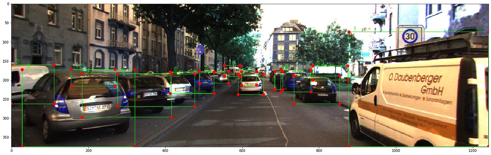
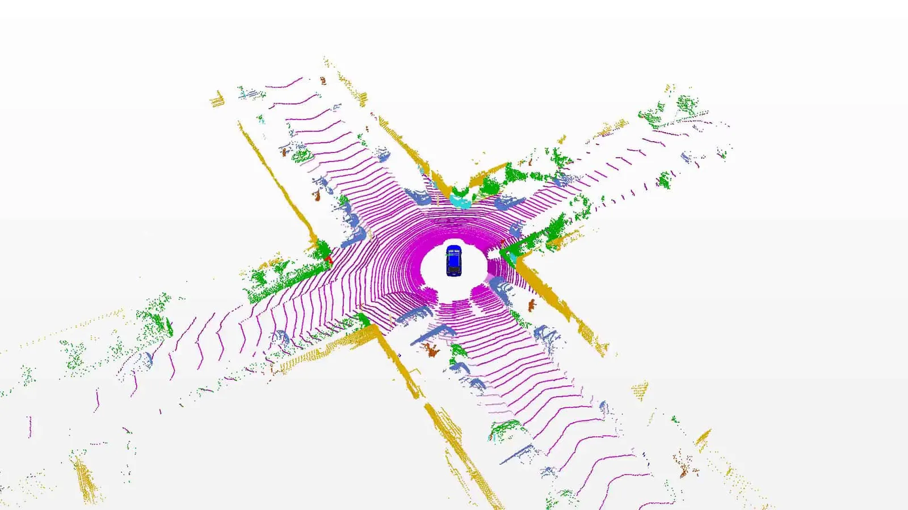
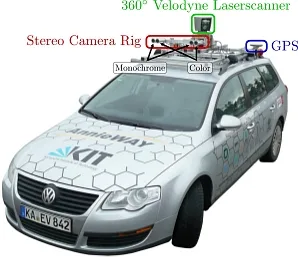

KITTI Dataset Introduction
Contents
KITTI Detailed Introduction
When it comes to benchmarking algorithms for autonomous driving, computer vision, and 3D perception, few datasets are as influential as the KITTI dataset. Released by the Karlsruhe Institute of Technology and the Toyota Technological Institute at Chicago, KITTI has become a cornerstone for tasks such as stereo vision, optical flow, visual odometry, 3D object detection, and more.
In this blog, I’ll dive deep into the KITTI dataset, with a special focus on point cloud data, data formats, calibration files, annotations, and the 3D bounding box specifications. Whether you’re just getting started or want a technical refresher, this guide will help you understand the essentials.
What is the KITTI Dataset?

KITTI is a real-world dataset collected using a setup mounted on a car driving around Karlsruhe, Germany. It includes:
- Stereo camera images (color and grayscale)
- 3D laser scans (Velodyne LiDAR point clouds)
- GPS/IMU data (for localization)
- Calibration files (aligning sensors)
- Ground truth labels (for tasks like 3D object detection)
The KITTI dataset is divided into several benchmarks, each aimed at a specific task:
- Stereo (depth estimation)
- Optical Flow
- Visual Odometry / SLAM
- 3D Object Detection
- Road/Lane Detection
- Tracking
For this blog, I'll concentrate especially on the 3D Object Detection benchmark, which heavily utilizes the Velodyne LiDAR point cloud data.
Point Cloud Data in KITTI
The point cloud data comes from a Velodyne HDL-64E rotating 3D laser scanner. It provides a sparse 3D representation of the environment around the car.
- File format:
.binfiles - Location:
data_object_velodyne/velodyne/ - Per file: One scan per file (i.e., per frame)
Here is an example code to read and visualize point cloud data in Open3D.
Format of the Point Cloud Files

Each .bin file contains raw, uncompressed point cloud data. Every point is stored as a float32 (4 bytes each) and is represented as:
[x, y, z, reflectance]
where:
x,y,z: 3D Cartesian coordinates (in meters)reflectance: intensity value measured by the LiDAR sensor
Each point therefore uses 4 x 4 = 16 bytes.
You can read a point cloud using Python like this:
import numpy as np
# Read a .bin file
point_cloud = np.fromfile('path_to_file.bin', dtype=np.float32).reshape(-1, 4)
Calibration Files

The KITTI dataset includes calibration files that provide the necessary transformations between different sensors (e.g., LiDAR, cameras).
- Location:
data_object_calib/calib/ - File extension:
.txt
Each calibration file includes:
- P0, P1, P2, P3: Projection matrices for each camera
- R0_rect: Rectification matrix (for transforming from camera coordinates to rectified camera coordinates)
- Tr_velo_to_cam: Transformation from Velodyne LiDAR to camera coordinates
- Tr_imu_to_velo: Transformation from IMU to Velodyne coordinates
Example from a calibration file:
P0: 7.215377e+02 0.000000e+00 6.095593e+02 ...
R0_rect: 9.999239e-01 9.837760e-03 -7.445048e-03 ...
Tr_velo_to_cam: 7.533745e-03 -9.999714e-01 -6.166020e-04 ...
Tr_imu_to_velo: 0.007027 -0.999963 -0.000000 ...
Understanding these matrices is crucial for projecting 3D LiDAR points onto 2D images or transforming between coordinate frames.
Annotation and Label Files
KITTI provides detailed object annotations for labeled frames. These are essential for training and evaluating 3D object detection models.
- Location:
data_object_label_2/label_2/ - File format:
.txt
Each label file corresponds to one frame and contains multiple lines, each line describing one object.
Annotation Format
Each line in the label file has the following fields:
Type Truncated Occluded Alpha BBox_xmin BBox_ymin BBox_xmax BBox_ymax
Dimensions_h Dimensions_w Dimensions_l Location_x Location_y Location_z Rotation_y
Breaking it down:
- Type: Object class (
Car,Van,Truck,Pedestrian,Cyclist, etc.) - Truncated: Float (0-1), fraction of object that is outside image boundaries
- Occluded: 0 = fully visible, 1 = partly occluded, 2 = largely occluded, 3 = unknown
- Alpha: Observation angle of object (relative to camera center)
- 2D Bounding Box:
- BBox_xmin, BBox_ymin: Top-left corner
- BBox_xmax, BBox_ymax: Bottom-right corner
- 3D Object Dimensions (in meters, height, width, length):
- h, w, l
- 3D Object Location (camera coordinates):
- x, y, z (center of 3D box, bottom of the object)
- Rotation_y: Rotation around Y-axis in camera coordinates (yaw)
Example line:
Car 0.00 0 -1.82 599.41 156.40 629.75 189.25 1.56 1.63 3.69 1.84 1.47 8.41 -1.56
3D Bounding Boxes
The 3D bounding boxes provided in the annotations are crucial for evaluating 3D object detection.
- Centered at the bottom center of the object
- Oriented around the Y-axis (camera coordinate system)
- Size specified via (height, width, length)
- Rotated based on the rotation_y angle
You can use these parameters to reconstruct the 3D bounding box in the camera or LiDAR coordinate system.
To visualize a bounding box:
- Start from the object center
- Extend along the object dimensions
- Rotate based on
rotation_y - Transform into the desired coordinate frame if necessary (e.g., from camera to LiDAR frame)
Quick Summary
| Aspect | Description |
|---|---|
| Point Cloud | .bin files, (x, y, z, reflectance) per point |
| Calibration | .txt files, matrices for aligning sensors |
| Annotations | .txt files, 2D bbox + 3D bbox + object class |
| 3D Box Location | Bottom center of object |
| Rotation | Around Y-axis in camera coordinates |
Conclusion
The KITTI dataset offers one of the richest sets of real-world sensor data for autonomous driving research. Understanding the structure of its point cloud files, calibration data, annotation formats, and bounding box definitions is essential for working with modern perception models.
By mastering the data layout, you unlock the ability to build robust models for 3D object detection, sensor fusion, and more. Whether you are developing cutting-edge algorithms or simply learning about LiDAR-based perception, KITTI remains a crucial resource in the computer vision and robotics communities.